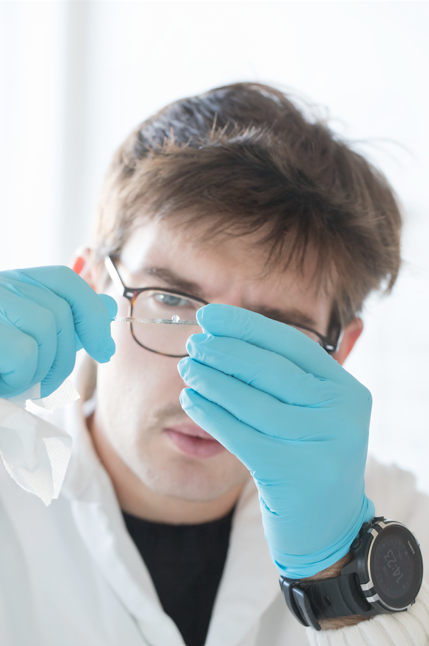

Matteo Milani
Postdoctoral Researcher ESPCI Paris and L'Oréal

I am a soft-matter scientist working on scattering, rheology, and microfluidics, with a passion for developing innovative experimental methods.
I obtained my Master’s degree in Physics in 2020 from the University of Milan, doing my internship at the WeitzLab in the School Of Engineering And Applied Sciences of Harvard University.
I completed my PhD in 2023 with the Soft Matter team in Montpellier under the supervision of Laurence Ramos and Luca Cipelletti. During my PhD, I studied colloidal gels and suspensions, with a focus on their microscopic structural evolution during drying, and became proficient in Dynamic Light Scattering (DLS), also developing a novel DLS setup.
In 2024 I moved as a postdoctoral researcher at PMMH at ESPCI: I am developing a pressure sensor based on color-changing hydrogel. This project is carried out in collaboration with L’Oréal.


Decoupling Structure and Elasticity in Colloidal Gels Under Isotropic Compression [Physical Review Letters] .

Rheofluidics: frequency-dependent rheology of single drops [arXiv] .

Synthesis of spherical mesoporous silica beads with tunable size, stiffness and porosity [Microporous and Mesoporous Materials] .
